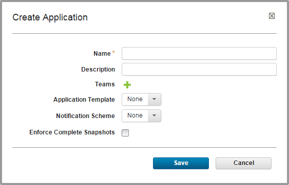
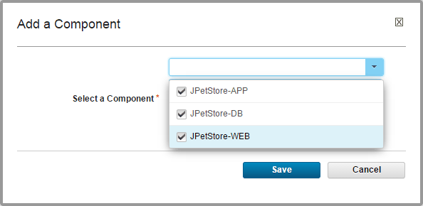

Creating applications
You can create an application from scratch or import an existing one.
Before you configure an application, ensure that at least one agent is installed in a target environment. For evaluation purposes, the agent can be on the same system as the server. See Resources.
See Importing applications for information about importing applications.
-
Display the Create Application dialog box Applications > Create Application, and enter the following information:

-
Typically the Name and Description correspond to the application you plan on deploying.
Restriction: If you deploy this application to a cloud that uses virtual system patterns, the application name cannot contain asterisk (*), backslash (\), or forward slash (/) characters. See Modeling environments for clouds that use virtual system patterns.
-
To grant teams access to the application and set its security type, click the plus sign icon by Teams, select values from the Team and Type lists, and click Add.
- To create an application from a template, from the Application Template list, select the application template name. Then, from the Application Template Version list, select either the application template version number or to ensure that the application always meets the latest requirements of the template, Always Use Latest. See Creating applications from application templates.
- Notification Scheme. HCL UrbanCode Deploy includes integrations with LDAP and email servers that enable it to send out notifications that are based on events. For example, the default notification scheme sends out an email when an application deployment fails or succeeds. Notifications also play a role in approving deployments: HCL UrbanCode Deploy can be configured to send out an email to either a single individual or to a group or people (based on their security role) notifying them that they must approve a requested deployment. See Creating Notifications in a Notification Scheme.
- If you want the application to require that every component is versioned, click the Enforce Complete Snapshots check box.
- Click Save.The new application opens.
- Add one or more components to the application:
- Within the application, click the Components tab, which is not to be confused with the global Components tab.
- Click Add Component.
-
In the Add a Component window, expand the Select a Component list and select the check boxes next to one or more components, as shown in the following figure.

-
Click Save.
-
After you create an application, you:
- Create an environment (Creating environments)
- Associate an agent with the environment (Mapping resources and components to environments)
-
Create an application process (Application processes)
-
Importing applications
If you exported an application, you can import the application on a different server. When you import an application, you can create an entirely new application or upgrade an existing one. - Exporting applications
Exporting applications creates a JSON file (file extension json) that contains the properties, components (and their associated properties and processes), and processes of the applications.
Parent topic: Applications